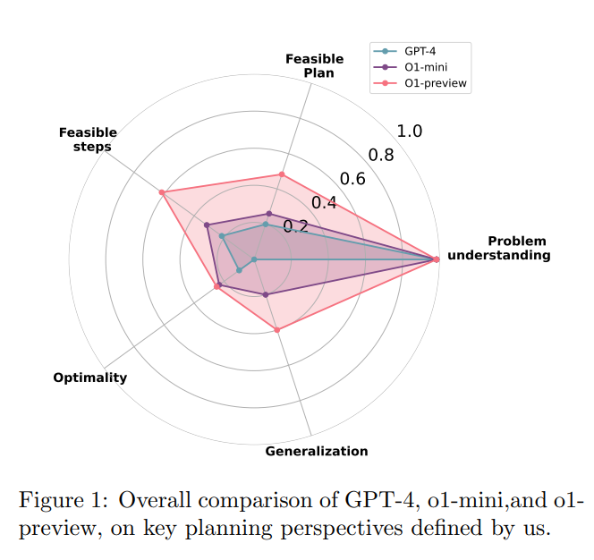
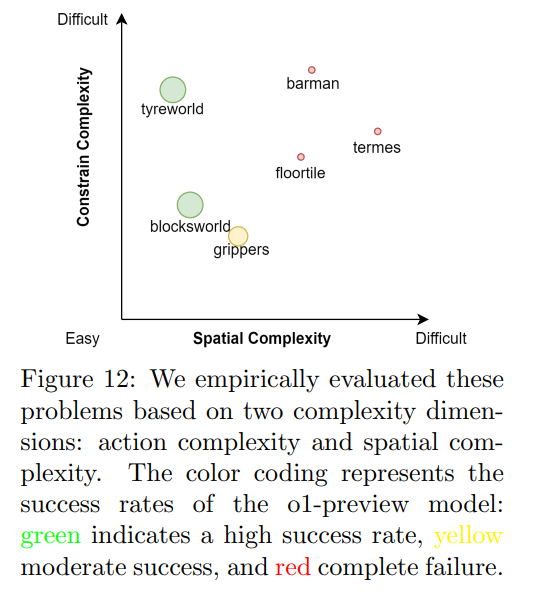

10/09 (simplified paper explanation) On The Planning Abilities of OpenAI's o1 Models: Feasibility, Optimality, and Generalizability
URL:https://arxiv.org/pdf/2409.19924
Recent advancements in Large Language Models (LLMs) have highlighted their potential in performing complex reasoning tasks. However, their capabilities in planning remain relatively unexplored. This paper, authored by Kevin Wang, Junbo Li, Neel P. Bhatt, Yihan Xi, Qiang Liu, Ufuk Topcu, and Zhangyang Wang, delves into the planning abilities of OpenAI's o1 models, focusing on their feasibility, optimality, and generalizability.
The main objective of this research is to evaluate the planning capabilities of OpenAI's o1 models across a range of benchmark tasks. The authors examine three key aspects: the model's ability to generate viable plan to achieve the goal, often referred to as success rate in previous works (feasibility), its ability to ensures that a plan can be successfully executed and concerns how efficiently the plan achieves its goal (optimality), and its ability to examines whether a language model can successfully plan across a diverse range of scenarios, including those it may not have explicitly encountered during training. (generalizability).

The researchers conducted empirical evaluations on constraint-heavy tasks such as Barman and Tyreworld, and spatially complex environments like Termes and Floortile. These evaluations aimed to highlight the o1 model's strengths in self-evaluation and constraint-following while identifying bottlenecks in decision-making and memory management, particularly in tasks requiring robust spatial reasoning.

The results show that the o1 model outperforms GPT-4 in adhering to task constraints and managing state transitions in structured environments. However, the model often generates suboptimal solutions with redundant actions and struggles to generalize effectively in spatially complex tasks. This indicates that while the model is capable of understanding and following task constraints, it has difficulty in making optimal decisions and applying learned knowledge to new tasks.
The researchers conclude that while the o1 model exhibits strengths in certain areas, such as self-evaluation and constraint-following, it also reveals limitations in decision-making and memory management. They suggest that future research should focus on improving these areas to enhance the planning capabilities of Large Language Models.